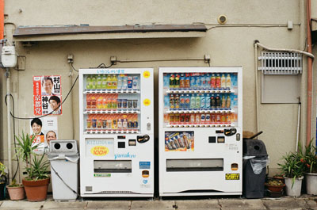
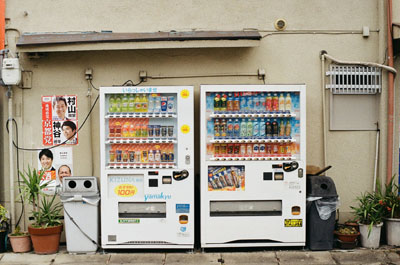
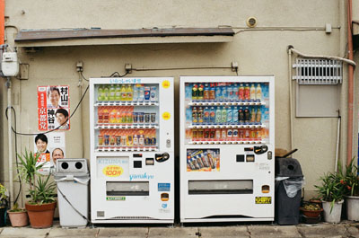

80% JPG - 66.4k
The quality is very good
 

80% JPG - 66.4k
The quality is very good
40% JPG - 21.5k
medium or low
256 Color Gif - 102.4k
medium quality
64 Color Gif - 62.89k
Quality is getting lower
8 Color Gif - 23.82k
Quality is very low
24 PNG - 278.2k
Quality is very good
